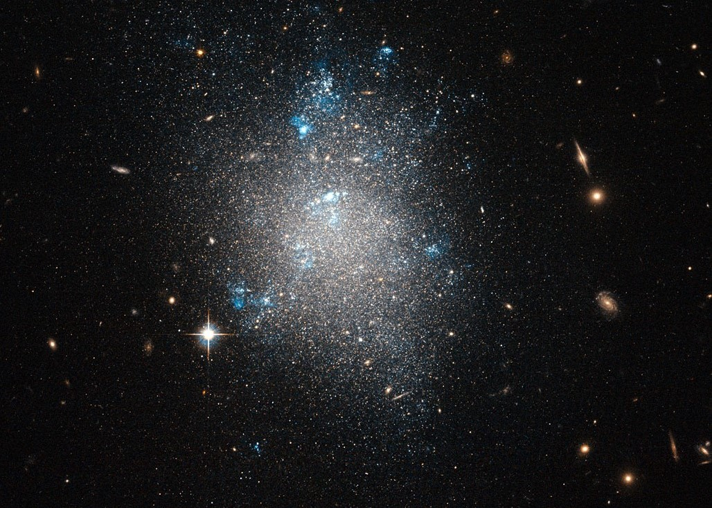
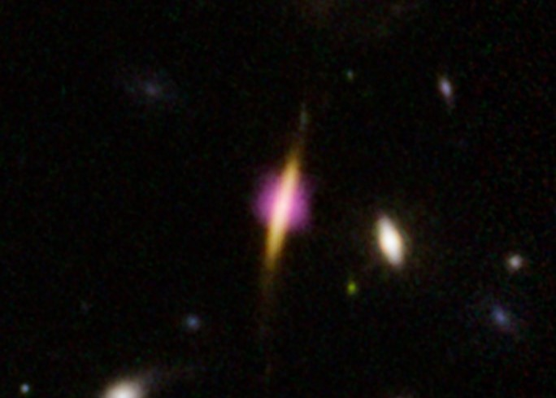
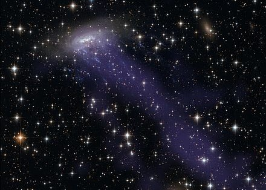
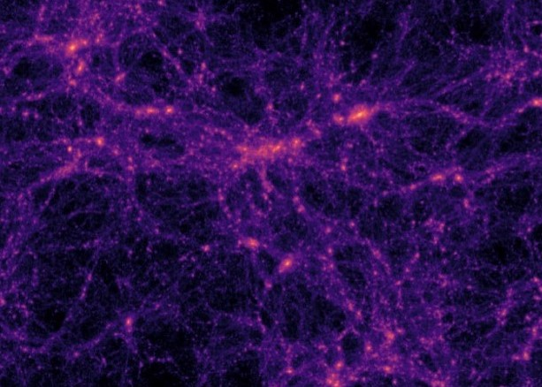

I want to use computation and astrophysics to simulate our Universe. Modern astrophysical simulations have made a breakthrough in this field: they can naturally realize observations of the Universe in the full cosmological context, with an unprecedented combination of numerical resolution and volume. Nevertheless, the data from these new simulations are vast, complex, and introduce more questions about the nature of our Universe.
I came to identify myself as an aspiring theoretical astrophysicist to meet the field at an exciting time of discovery. I have worked on numerous research projects in astrophysical simulations—from
large-scale structure, to galaxies, to black holes—always connecting my findings to observational data from new telescope surveys. I am now at the Max Planck Institute for Astronomy in Heidelberg, Germany on the U.S. Fulbright Scholarship, exploring galaxy evolution with the state-of-the-art simulation of the Universe, IllustrisTNG, all the while immersing myself in international efforts for public engagement with science.

Can active galactic nuclei suppress star formation in local dwarf galaxies?

Quenching in Early Galaxies
How do some galaxies stop forming stars so early in cosmic time?

SMBHs in Jellyfish Galaxies
What is the link between supermassive black holes and the environment?

How do the collapse of dark matter halos lead to large-scale structure?
Check out my first publication!
Shalini Kurinchi-Vendhan, Marion Farcy, Michaela Hirschmann, Francesco Valentino, On the origin of star formation quenching in massive galaxies at z ≳ 3 in the cosmological simulations IllustrisTNG, Monthly Notices of the Royal Astronomical Society, Volume 534, Issue 4, November 2024, Pages 3974–3988, https://doi.org/10.1093/mnras/stae2297
- © Shalini Kurinchi-Vendhan. All rights reserved.
- Design: HTML5 UP